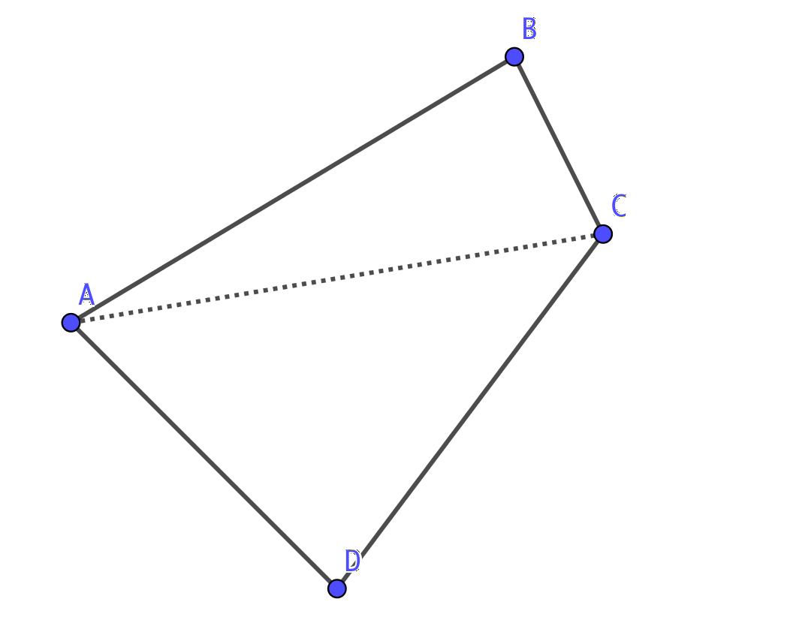
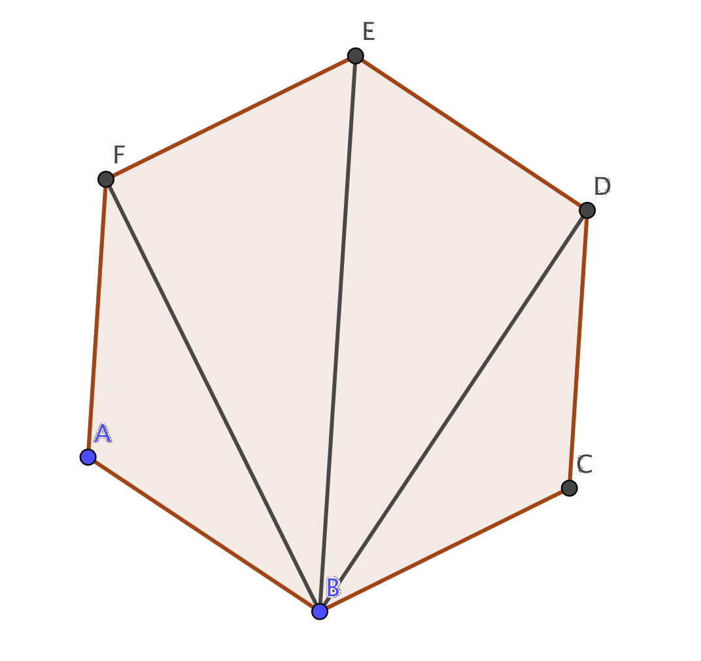
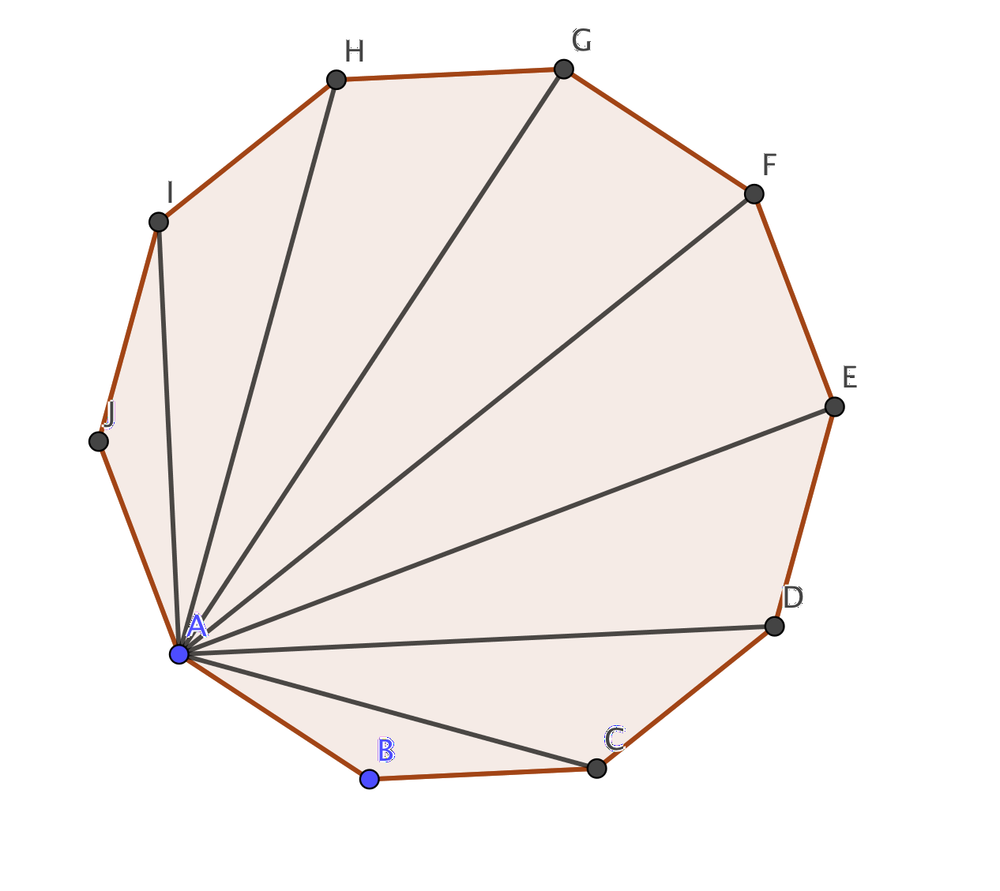

9. Bevisföring
Vi visar att triangelns vinkelsumma är 180o.
(Motsvarande bevis gjorde vi i MaA 3, men repetition är nyckeln till kunskap.)
När du bevisar matematik så håll dig till följande råd:
- Se till att beviset gäller allmänt.
- Testa att beviset stämmer.
- Ha en logisk ordning i ditt bevis.
- Hoppa inte över några steg.
- KISS (Keep It Simple & Stupid)
Oftast kör man fast när man bevisar något. Börja då från slutet och försök få början och slutet att passa ihop.
Matematiska bevis bygger man upp genom att ha antaganden, sedan ett påstående och till sist har vi själva beviset.
Exempel 1 Visa att fyrhörningens vinkelsumma är 360o.
Lösning
Vi bygger upp beviset genom att börja med ett antagande, sedan ett påstående och till sist själva beviset.
Vårt antagande är att triangelns vinkelsumma är 180o.
Vårt påstående är att fyrhörningens vinkelsumma är 360o.
Vårt bevis är följande:
Vi delar upp en fyrhörning i två trianglar.

Vi har triangeln ABC och triangeln ACD. En triangel har vinkelsumman 180o. Då har två trianglar vinkelsumman \( 2 \cdot 180^{\circ} \).
Då har fyrhörningen vinkelsumman 360o.
Exempel 2 Visa att kvadraten på ett udda tal är udda.
Lösning
Vårt antagande är att a är udda.
Vårt påstående är att \( a^2 \) är udda.
Vårt bevis är följande:
Vi betecknar ett udda tal med \( a= 2n+1 \).
Sedan bildar vi \( a^2 = (2n+1)^2 = 4n^2+4n+1 = 2(2n+2) + 1\).
2 gånger något blir alltid jämnt, men genom att addera 1 så blir talet udda.
Alltså är kvadraten på ett udda tal alltid udda.
Exempel 3 Visa att \( x - 1 < x^2 \) för alla reella tal.
Lösning
Då vi skall visa att \( x - 1 < x^2 \) är det samma som att visa att \( x-1 -x^2 < 0 \).
Om vi inför en funktion, \( f(x) = -x^2-x-1 \) så skall vi visa att den alltid är negativ.
Det kan vi visa genom att bestämma toppen och visa att dess y-värde är negativt. Eller så bestämmer vi funktionens största värde med hjälp av derivata.
Derivatafunktionen är \( f'(x) = -2x+1 \).
Derivatans nollställe, \( f'(x) = 0 \) är \( -2x+1 = 0 \) ger oss \( x= \dfrac{1}{2} \).
Då \( f'(0) = -2\cdot 0 + 1 = 1 \). Alltså är \( f \) växande.
Då \( f'(1) = -2\cdot 1 + 1 = -1 \). Alltså är \( f \) avtagande.
Med andra ord har vi ett största värde i \( x = \dfrac{1}{2} \). Det största värdet är \( f(\dfrac{1}{2}) = -(\dfrac{1}{2})^2 -\dfrac{1}{2}-1 = -\dfrac{1}{4}-\dfrac{1}{2}-1 = -1\dfrac{3}{4} \).
Alltså är \( f \) hela tiden negativ. Och då gäller att \( x-1 -x^2 < 0 \), som ger oss att \( x - 1 < x^2 \).
Uppgifter
- Visa att vinkelsumman i en regelbunden sexhörning är 720o.
Vi vet att en triangels vinkelsumma är 180o.
Vi delar in sexhörningen i trianglar.

Eftersom sexhörningen består av 4 st trianglar är vinkelsumman \( 4 \cdot 180^{\circ} = 720^{\circ} \).
- Visa att vinkelsumman i en regelbunden tiohörning är 1440o.
Vi bevisar satsen på motsvarande sätt som förra uppgiften.
Vi vet att en triangels vinkelsumma är 180o.
Vi delar in tiohörningen i trianglar.

Eftersom sexhörningen består av 8 st trianglar är vinkelsumman \( 8 \cdot 180^{\circ} = 1440^{\circ} \).
- Visa att summan av två på varandra följande jämna tal är jämnt.
Då vi multiplicerar med 2 får vi ett jämnt tal, alltså innehåller varje jämnt tal faktorn 2.
Vi betecknar ett jämnt tal med \( 2n \). Då är följande jämna tal \( 2(n+1) \).
Då vi bestämmer summan får vi \( 2n + 2(n+1) = 2n + 2n+2 = 4n+2 = 2(2n+1) \).
Eftersom produkten innehåller faktorn 2 är summan jämn.
- Visa att summan av två på varandra följande udda tal är jämnt.
Eftersom vi kan beteckna ett jämnt tal som \( 2n \). Då kan vi beteckna ett udda tal som \( 2n+1 \). Två följande på varandra är \( 2n+1 \) och \( 2n+3 \). Eller som \( 2n-1 \) och \( 2n+1 \).
Vi bildar summan \( (2n + 1) +(2n+3) = 4n+4 = 2(2n+2)= 2\cdot 2(n+1) \).
Eftersom produkten innehåller faktorn 2 är produkten jämn.
- Visa att ett jämnt tal i kvadrat alltid är jämnt.
Vi kan betckna ett jämnt heltal med \( a=2n \).
Då vi bildar \(a^2 \) får vi \( (2n)^2 = 4n^2 = 2\cdot 2n^2\). Alltså har vi ett jämnt tal.
- Visa att \( x^3 > x^2 \) då \( x > 1 \).
Skall vi visa att \( x^3 > x^2 \) så gäller att \( x^3 - x^2 > 0 \), då \( x > 1 \).
Antingen kan vi visa det genom att undersöka en funktion, eller genom att lösa en olikhet.
Vi inför en funktion \( f(x) = x^3-x^2 \), och visar att den är positiv då \( x > 1 \).
\( f'(x) = 3x^2-2x \). Vi söker funktionens minsta värde.
Derivatans nollställe, \( f'(x) = 0 \). Alltså \( 3x^2 -2x = 0 \). Vi får \( x_1 = 0 \) och \( x_2 = \dfrac{2}{3} \). Eftersom \( x > 1 \) byter inte funktionen riktning i det intervall som vi undersöker.
Vi får \( f'(2) = 3(2)^2 -2 \cdot 2 = 8 > 0 \). Funktionen är strängt växande i intervallet.
Vi söker funktionens minsta värde, \( f(1) = 1^3-1^2 = 0 \).
Alltså är \( f(x) > 0 \). Då gäller att \( x^3 - x^2 > 0 \) som betyder att \( x^3 > x^2 \) då \( x > 1 \).
- Visa att \( e^x > x \).
För att visa att \( e^x > x \) så visar vi att \( e^x -x > 0 \).
Vi inför funktionen \( f(x) = e^x -x \) och visar att funktionens minsta värde är positivt.
Derivatafunktionen är \( f'(x) = e^x - 1 \).
Derivatans nollställe: \( f'(x) = 0 \). Alltså \( e^x - 1 = 0 \). Det sker då \( x = 0 \).
Vi undersöker derivatans tecken.
\( f'(-1) = e^{-1} -1 = \dfrac{1}{e} -1 \approx -0,63\ldots < 0 \). Funktionen avtagande.
\( f'(1) = e^{1} -1 = e -1 \approx 1,71\ldots > 0 \). Funktionen växande.
Vi har ett minsta värde i \( x = 0 \). Värdet är \( f(0) = e^0 -1 = 0 \).
Eftersom funktionens minsta värde är 0 är resten av värdena positiva. Då gäller att \( e^x -x > 0 \) och att \( e^x > x \).
- Låt \( a \) och \( b \) vara positiva heltal. Visa att \( SDG(a,b) \cdot MGM(a,b) = ab \).
Lösningen
- Vinkelsumman i en regelbunden månghörning kan bestämmas med formeln \( (n-2)\cdot 180^{\circ} \) där \( n \) är antal hörn för månghörningen. Bevisa att formeln stämmer.
Vi undersöker vinkelsummorna för de figurer som vi känner. Vi får följande
Hörn Vinkelsumma 3 \( 180^{\circ} \) 4 \( 2 \cdot 180^{\circ} \) 5 \( 3 \cdot 180^{\circ} \) Vi märker att sambandet är \( (n-2)\cdot 180^{\circ} \).